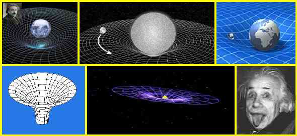
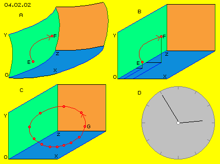
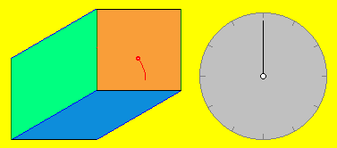
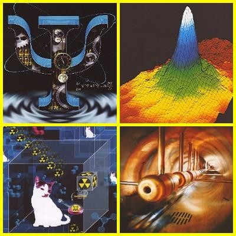
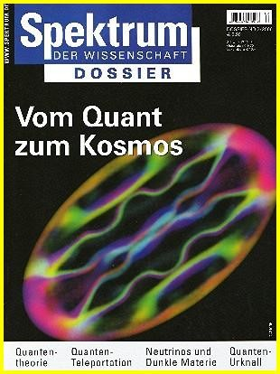

| Alfred Evert | 2006-08-23 |
04.02. Space-Time-Quantum-Zero-Point-Energy
Crystal-clear Aether
´Summarizing we can say: based on relativity theory the space shows physical qualities, based on the existence of aether. Based on relativity theory space without aether is unthinkable, because within an aetherless space not only the motion of light could not exist, but no existence for measurements and clocks would be possible, so no physical space-time distances could exist. The aether however can not be thought to show properties like ponderable media, thus not to exist by particles moving through space and time, so the common term of motions is not usable´.
Ok, just that´s - or at least like that: the aether is without any separated parts - however if that primary medium would not move within itself, no ´existence´ of secondary occurrences would be possible, neither of ´clocks´ nor of anything else.
Nebulous Space-Time-Bends

- Like at previous rubber-sheet, the grid of spacetime at all pictures is bended down, further down than the central mass. However, why or by which force can these sheets respective grids be dented or pulled down below the affecting masses?
- If a planet or a moon become some slower - will they fall down at tracks south of the south-poles?
- Funnel downside-left represents a strong bending into a Black-Hole. Do masses affect the gravity only into one direction or should many of these funnels be arranged all around Black-Holes?
- Is this possible to imagine resp. which bended lines would result by many overlaying funnels? Can these imaginations of spacetimebends fit to reality at all?
Mind you: specialists had time for decades to visualize and demonstrate that critical aspect of Einstein´s ideas by fitting and convincing graphs. For me, only best-known Einstein picture right side down shows a clear message: ´it was all a fake - and nobody got it!´ In spite of the overwhelming evidence by famous scientists, most main-stream-physicists still refer to the validity of relativity theories. Also I refer to Einstein - however to his late statements claiming the real existence of a real aether.
Four Dimensions
I always thought, mathematics as the ´most clear science´ would have no problems with calculations at fictive dimensions as you like it. Obviously however, the solved problems may not concern the real relations of surfaces of these fictive bodies. At the other hand it´s reassuring to learn, mathematics deny a solution if much too fantastic fictions are put as axioms. So it also might be clear, Einstein´s famous mathematic tricks can not represent the reality (like disproved by many authors).
Nevertheless I agree with Einstein: bendings are most important, no real straight lines exist. At picture 04.02.02 at A is shown the ´bended space´ (see bended X-, Y- and Z-coordinates) and Something within is moving from E to F at a curved track. Relativity-mathematicians will like to calculate that ´uneven curve´ relative to each bends of space with its locations and accelerations.
However, I have problems already with the idea, into which direction the vector of inertia will show. Straight-ahead naturally - however here this won´t mean exact forward but into direction corresponding to all bends of all three dimensions same time (if time as fourth dimension is neglected, thus only the three-bended-dimensions-space-problem here should be solved).
When e.g. a comet comes near to the Sun, it will cross a spectrum of ´bended space lines´ towards inward. At its nearest point, just before crossing these space lines outward again, the comet will move at a section of a circle around the Sun. So the inertia of that comet momentary shows into direction of a circle - and how should it ever be able to escape the Sun? On basis of previous pictures all comets would gather somewhere ´down south of south-pole´.

In order to describe exactly bodies, shapes, places, distances, movements etc., a right-angle coordinate-system is necessary. The zero point of that frame of reference can be chosen as we like it. Einstein is right: nearby everything is bended, especially the tracks of movements. Only these fictive coordinates of an abstract room (at B) must theoretically be thought to be absolutely straight - otherwise e.g. any real curved line could not be defined by comparison with theoretic straight lines.
So here I use the terms room and space only by that geometric sense, as clear term for a right-angled coordinate system. Within a voluntary chosen section within that room/space resp. frame of reference, any location is simple to define by X-, Y- and Z-numbers. For figurative sense of the ´space´ here exclusively is used the clear and common term ´universe´. Descriptions here mostly need no numbers, but movements most are described by terms like left/right, front/back, up/down, which all are related to that fictive coordinates resp. frame of reference.
At picture at B again is marked, Something is moving from E to F. This is the graphic representation of a real movement. That Something must be real, otherwise no motion could be real. ´Room´ however is not real but exclusively a fictive term, only necessary for exact inspection or discussion or communication of real processes. That not-real room never can show ´energy´. Real within a room only is that substance of aether. Energy is not real but a fictive term, in reality existing exclusively as motions.
Many readers take offence at ´old fashioned´ term of aether and suggest to use modern terms e.g. like ´space-energy´. Once more I state clearly: ´space´ is a geometric fictive term, analogue ´energy´ is only an abstract collective noun. ´Space-Energy´ combines two fictive terms, i.e. it´s an empty-word (which only can produce confusion and never ever can produce useful explanations). Analogue, room is not equivalent to aether, because room is something abstract, while the aether is real concrete substance.
Term of Time 
Real are only these movements (and this animation is only a graphic representation of). Movements of the red point and the motion of the clock-hand are totally independent. Naturally, the red point like the clock-hand each are located at one determined position within space, at the following moving to next position. By this coarse animation, naturally it will take a while until coming to next position - however nowhere exists really something like ´time´.
Within our body and around our body, everything really is in motions (even it seems resting), however these motions need no ´room´ (previous fictive green-red-blue walls) to be really moving. Analogue, these motions need no ´time´ to be really moving. There is no time as a real occurrence, but each time-measurement basically is some suitable motion. Finally and exclusively, if one wants to inspect the ´speed´ or ´accelerations´ exactly, the abstract term of ´time´ comes up.
These measures basically are only a comparison between two independent movements. For definition of a distance, the fictive frame of reference called ´room/space´ is used and for definition of ´time´ a most steady repeating event is used (lastly again based on any motion, which repeats moving distances of same lengths). Scales for distance and time, theoretic can be used as we like it - and this clearly indicates, ´dimensions of space and time´ are pure abstract - while all movements are real facts - and all movements logical imply something real which is moving.
The ´scholarly dispute about time´ ended with that understanding, nevertheless new mysteries about the nature of time come up on and on. Indeed, ´time´ is not constant, as a clock at different environment ´ticks´ other kind. Clocks are made of atoms, atoms are aether-vortices and their ´revolutions´ are depending on behaviour of surrounding aether. Already a clock up at mountain ticks faster than same clock down at the valley. Clocks of GPS-satellites must be back-calculated (however twenty times ´slower´ than the formula of Relativity-Theory tells).
So it´s an absolute fiction resp. totally inept trying to explain real processes of the universe by pure abstract terms of space and time or even on its combination spacetime or even based on the curved four-dimension abstraction.
Quantum-Theories

Naturally there are explained Plancks investigations about quanta and Einstein´s Nobel Prize for introduction of photons and his explanation of the photo-effect. As a result it´s stated, ´today the wave-particle-dualism is assured without any doubt´, followed by the statement ´physicians are still irritated by the concept of photons´.
Schrödinger designed his famous ´wave-function´ and its interpretation was discussed by decades and still no agreement is reached. Heisenberg generated his ´unsharp-principle´, which allows only probabilities e.g. for the location and impulse of particles, these also overlaying to ´superpositions´, which ´collapse´ only by observer. Schrödinger´s famous cat is still discussed, uncertain whether it´s alive or dead until someone looks into the box - unbelievable useless loops of imaginations of these intelligent men. Today one accepts, based on ´decoherence´, an event becomes real by interactions also of other kind - e.g. an anvil functions as observer, so the hammer will get a hammer finally when hitting an anvil.
Based on wave-function and super-position, the author starts a second attempt for explaining the double-gap-experiments, finally establishing: ´we have a right for rational explanation, however up to now none was found´. Again and again he claims the validity of quantum-theories, because mathematics are ´logical consistent, however the problem is nobody can tell about the facts by non-mathematic language´.
Bohr himself formulated: ´There is no quantum-world. There is only a quantum-physical description. It´s delusion to believe, the subject of physics would be the detection how nature works. Physics concern only what we can say about the nature´. Rather hard disappointment for a layman: physics is what physicians talk about nature - physics is not the ambition to explain why and how nature works. So it´s probably true like Al-Khalili writes: ´some of most famous scientists of our time even admitted in public, nobody really can understand the quantum-theories´. And these scientists really studied not only popular-scientific literature (like quoted here).
Despite of this admission, still ´particle accelerators´ are build and particles are bombarded by high-speed wave-particles in order to crack out most sub-elementary particles and to detect the ultimate bases of the material world. Hundreds and thousands of these ´quarks´ are detected - however these can not be brick stones of materia but are wreckage of destroy.
Zero-Point

Just this is achieved by ´atom-traps´, where the possibility for movements of atoms is limited at its best by laser-radiation and magnetic fields, so the atoms are practically cooled down to minimum temperature. The atoms transmit into a status of gas-like condensate - and photos really show ´quantum-vortices´, e.g. like the cover picture shows that ´physical state of plasma´.
That article remarks: ´In August 2000 Wayne Hu of Princeton University and his team suggest, dark invisible materia, obviously more than ninety percent of masses of the universe, could exist in shape of Bose-Einstein-condensate by particles of very few mass. If this daring hypothesis fits, most cold gases would be most widespread same time´.
The temperature far out at the universe naturally is rather deep, because there are few ´particles´ to hit onto a thermometer. Everywhere would be these ´gas-condensates´, which now are assumed to show rather few ´masses´ - because otherwise the common calculations again would not fit, based on too much ´invisible resp. dark´ materia.
At these zero-point-experiments, condensates are to ´stir around´ by laser and diverse vortices-pattern can be produced - and directly documented by photo-pictures. Indisputable there are no ´hard parts´ to detect - and just at these condensates resp. by minimum temperatures anything hard or solid should ´crystallize´. Unmistakable Collins states ´the classic idea of atoms as particles, which meet like minute marble, fail for interpretation of these experiments in total´.
At this background it´s really unbelievable, why researches still aim to find any ´particle´ or masses, as all experiments lastly show nothing else than movements. However these experiments do not show the movement structures of atoms at all, but these pictures primary show motion pattern of atom-traps, i.e. their strong magnet fields in combination with laser radiations.
Aether and Movement
The term of ´Zero-Point-Energy´ again is a combination of abstract terms, thus is a sense-less and content-less empty word. This term really represents the ´perplex astonishment of physicians´, below zero movements of ´material movements´ still exist motions on and on. This shows obviously, ´materia´ is only a secondary occurrence, which can appear only at basis of a primary medium.
Who ever wants to talk about new worldview must refer to one - or preferably both - pillars of common physics, Einstein and Quantum-Theories. So do I, referring to Einstein´s mature statements: space without aether is unthinkable, the aether may not be assumed to exist by particles and the aether shows no ´normal´ movements like known from the materia-world. In addition I refer to recent confirmations of Quantum-Physics, which could not detect any ´hard particles´ of materia even at most extreme situations - but only they were able to find steady movements in most diverse pattern.
The common physics stick at a dead-end as long as sticking on particles and wave-particle-dualism. In addition, common physics stick at wrong ideas about movement-pattern, especially concerning ´waves´ - like discussed next chapter.
I am sorry these critics might upset some readers, however incomprehensibility and the paradox of Relativity- like Quantum-Theories ´shout´ for understandable worldview. I won´t go on with critics but I will point out the logic alternatives by simple words and clear defined terms. However, some geometric imagination is necessary to check the complex movement processes within only three dimension space. I hope my simple pictures and animations will help to visualize and understand the new ideas and processes.
Naturally, just at the 100-years-Einstein-events many readers told me, since Einstein ther existence of an aether is refuted. Indeed, young Einstein ´eliminated´ the aether as everyone knows. Unknown however mostly are the statements of elder Einstein as he ascertained the aether being inevitably existing. I refer to earlier chapter 01.01.04 ´All or Nothing´ and especially 01.01.05 ´Space and Time´ with commentaries on these aspects. Because these statements of Einstein are mentioned scarcely, I quote his speech of 5.5.1920 at the University of Leiden once more:
Only the elder Einstein made statements so clear to understand. The younger Einstein loved to put (mentally) his followers into rockets and trains and dark lifts and most astonishing, many followers believed (and still believe) only a relative subjective worldview is possible - even the stationmaster has objective knowledge about resting and driving trains. Not all vehicles drive by light speed through the space, nevertheless Einstein convinced many followers (and many still are convinced), space and time are connected anyhow - and in addition that space-time is bended by masses. He could not explain all attracting forces mentioned above, but he only claimed the gravity to be effected by bended space (without any explanation, why and how masses could affect that bending).
In that respect, a report of 25. International Mathematics Congress at Madrid is interesting. Mathematician Grigori Perleman from St.Petersburg, occasionally called ´most intelligent man of world´, refused to take the Fields-Medal - a highly esteemed award - even he probably had solved the most difficult problem of mathematics: the properties of the surface of four-dimensional bodies (thus concerning the space-time world-view). Probably he would have the legitimate claim for rewarded one million Dollars, offered by the American Clay-Foundation for the solution of the ´Poincaré-Presumption´, which troubles experts since hundred years.
In English, the common word ´space´ is synonymous with room, gap, place etc., at the other hand with emptiness and also used equivalent to universe. Analogue in German language, common word ´Raum´ (room) sometimes is used similar to the term universe. Basically however Raum/room means something like living-, dining-, assembly-, class-room or hollow etc. In scientific sense, Raum/room is a pure geometric term e.g. describing a volume.
When the Relativity-Theory does not work, the worldview is based on second standing leg of physics, the Quantum-Mechanics (resp. its following theory variations). The development and statements of that science theories are documented e.g. by Jim Al-Khalili at his book ´Quantum´, for example by these wonderful pictures. ´A guide for the perplexed´ - the subtitle promises.
At the very moment, ´Spektrum der Wissenschaft´ (German periodical ´Spectrum of Science´) published a special script ´Vom Quant zum Kosmos´ (From Quantum to Cosmos) with diverse articles of famous scientists concerning these problems. Again the history of Quantum-Theories is discussed, up to most new results. Here I will point out only one of these findings, concerning ´Bose-Einstein-Condensate´, shown at the cover picture of that magazine. The author of that article is Graham P. Collins, editor of ´Scientific American´.
These condensates also are not identical with the medium of these occurrences. So I can not accept the suggestion of many readers to replace the old fashioned aether by common term of ´Zero-Point-Energy´. The aether is the primary real substance, which is in motion within itself. The temperature (no matter of zero-point or of Sun´s surface) is measuring the motion of secondary occurrences (so at level of previous ´marbles´). And ´energy´ anyway is only a pure abstract term, not describing real facts.
04.03. Light-Aether
Aether-Physics and -Philosophy